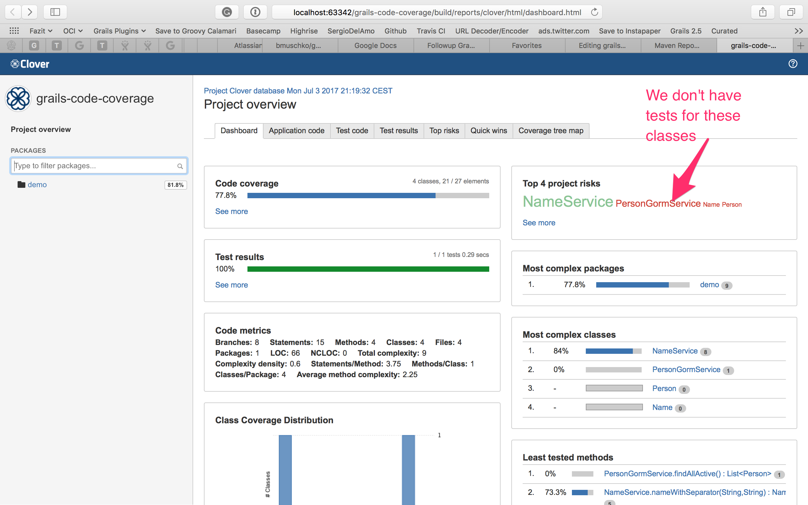

Grails Code Coverage
In this guide you'll learn how to improve your code coverage using Clover.
Authors: Sergio del Amo
Grails Version: 3
1 Grails Training
Apache Grails Training
Apache Grails is now part of the Apache Software Foundation. The community-maintained training catalog is being migrated; in the meantime see the Learning page for current resources, recorded talks, and links to other community-supplied training material.
2 Getting Started
Atlassian Clover provides Java and Groovy developers a reliable source for code coverage analysis.
Since April 11, 2017, Clover is Open Source.
Grails 3 uses the Gradle Build System for build related tasks, such as compilation, running tests, and producing binary distributions of your project.
In this guide we are going to install a Gradle plugin to get code coverage of our Grails application.
2.1 What you will need
To complete this guide, you will need the following:
-
Some time on your hands
-
A decent text editor or IDE
-
JDK 11 or greater installed with
JAVA_HOMEconfigured appropriately
2.2 How to complete the guide
To get started do the following:
-
Download and unzip the source
or
-
Clone the Git repository:
git clone https://github.com/grails-guides/grails-code-coverage.git
The Grails guides repositories contain two folders:
-
initialInitial project. Often a simple Grails app with some additional code to give you a head-start. -
completeA completed example. It is the result of working through the steps presented by the guide and applying those changes to theinitialfolder.
To complete the guide, go to the initial folder
-
cdintograils-guides/grails-code-coverage/initial
and follow the instructions in the next sections.
You can go right to the completed example if you cd into grails-guides/grails-code-coverage/complete
|
3 Writing the Application
3.1 Gradle Clover Plugin
We are going to use the Gradle Clover Plugin to generating a code coverage report using Clover.
We are going to create a gradle file to keep the Clover configuration in one place
link:{sourcedir}/gradle/clover.gradle[role=include]| 1 | Although, Clover is open source, you need to create a dummy license file. |
| 2 | We don’t want certain files to pollute our code coverage reports. |
| 3 | We want to include our Spock specifications as test files. |
| 4 | We want reports in both XML and HTML |
We are going to reference this file from the ROOT build.gradle
link:{sourcedir}/build.gradle[role=include]| 1 | Add the plugin as a build script depedency |
| 2 | Apply the build file with Clover configuration. |
3.2 Code and test
We have a domain class
link:{sourcedir}/grails-app/domain/demo/Person.groovy[role=include]We have also a service which encapsulates the GORM queries against the previous domain class.
link:{sourcedir}/grails-app/services/demo/PersonGormService.groovy[role=include]We have a Groovy POJO.
link:{sourcedir}/src/main/groovy/demo/Name.groovy[role=include]The business logic of this app is in the NameService which
guesses the firstName and lastName of each of the Person instances.
link:{sourcedir}/grails-app/services/demo/NameService.groovy[role=include]We have written a test for this service:
link:{sourcedir}/src/test/groovy/demo/NameServiceSpec.groovy[role=include]| 1 | Uncomment this line to increase your code coverage. |
4 Running the Application
To generate the code coverage report use the ./gradlew cloverGenerateReport command
which will generate the reports under: build/reports/clover/html/index.html
Explore your report and improve the project coverage:

5 Do you need help with Grails?
Help with Apache Grails
Apache Grails is supported by an active community of contributors and the Apache Software Foundation. If you need help working through a guide, want to discuss the framework, or have run into something that looks like a bug, the channels below are the right place to start.
-
Slack - real-time conversation with the Apache Grails community.
-
dev@grails.apache.org">Developer mailing list - design discussions and contributor coordination.
-
users@grails.apache.org">Users mailing list - end-user questions and answers.
-
Issue tracker on GitHub - file a bug or feature request against the framework.
For Grails plugins, see the matching project on the apache org or the plugin’s own GitHub repository.